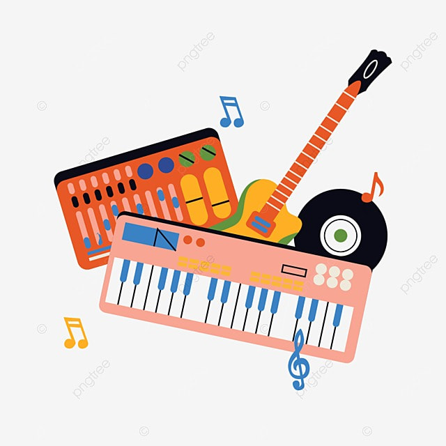

Perfect Duo (Piano and Guitar)
Since little I had a a fascination with musical instruments, but one that stood out to me the most was the piano, so I made it my goal to one day learn how to play it, ironically enough my first instrument was the guitar. I don't know what made me buy it but to this day i'm still happy with my purchase. As much as I love the guitar I still like the piano better, but i'm amazed at the varieties of guitars that exist. Additionally there's a bunch of songs that make the guitar a perfect instrument. Songs like "TV" by Billie Eilish, or "Teardrops in my Guitar" by Taylor Swift are few to mention, but manages to evoke a sad yet comforting feeling with an acoustic guitar. I respect the guitar but I have a profound love for the piano, as I have mention before, I'm currently taking piano lessons, and one of my favorite things to do with the piano are the waltz. Songs written in the 3/4 time signature are very interesting to me as they sound playful and fast paced. Some songs I love to play in the piano are "Love makes the world go round" and "The Entertainer".
Now, if you seek to learn these instruments but you can only afford to learn one, You can watch the following video that may help you make a decision.
After making your decision, you may feel this rush of energy going through your body, with a whole new world of endless possible things you could play, yet your mind goes blank at the same time, and you're stuck without knowing what to play. Well personally I would recommend choosing one album in particular and learning the songs that already have a piano instrumentation or you could play songs from games OST.
*P.S. If you're interested in knowing my opinion of the relation between games and music then you should definitely check out my next page that talks more about it.
Albums!
Albums are the best thing in the world, you may get excited with a song by your favorite artist being released after being teased for so long, but can you imagine having like 14 tracks from your favorite artist on the same day? Well, if you love albums as much as me, then perhaps you'll be interested in reading more about the beauty of albums in my previous page.
Previous PageGame's OST
If you want to know more about games and music (because who would not want to have the best of both worlds) then, come check out the next page that talks more in depth about this, while also giving some examples games that are a masterpiece. Who knows perhaps I cover your favorite game.
Next Page